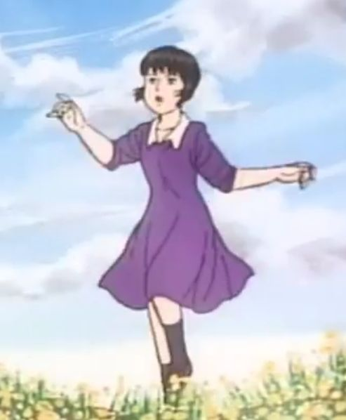

Kawai Murad, onun çisli pampaları, Leyla və onun Chikaawa ordusu sənin ad gününü təbrik edir, 16 yaşını tamamladığın üçün! 🎉



🎵 Əsas Musiqi:
📢 Sürpriz Səs:
💌 Sənin üçün məktub var... Toxun aç

🎵 Əsas Musiqi:
📢 Sürpriz Səs: